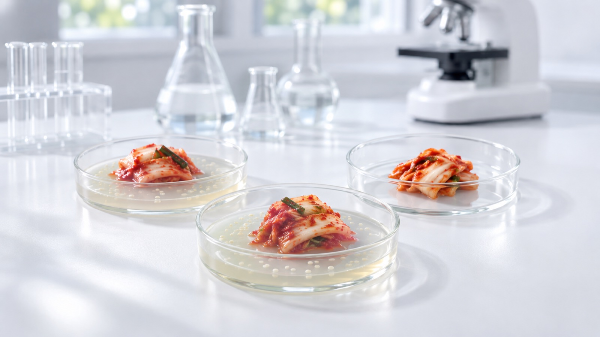
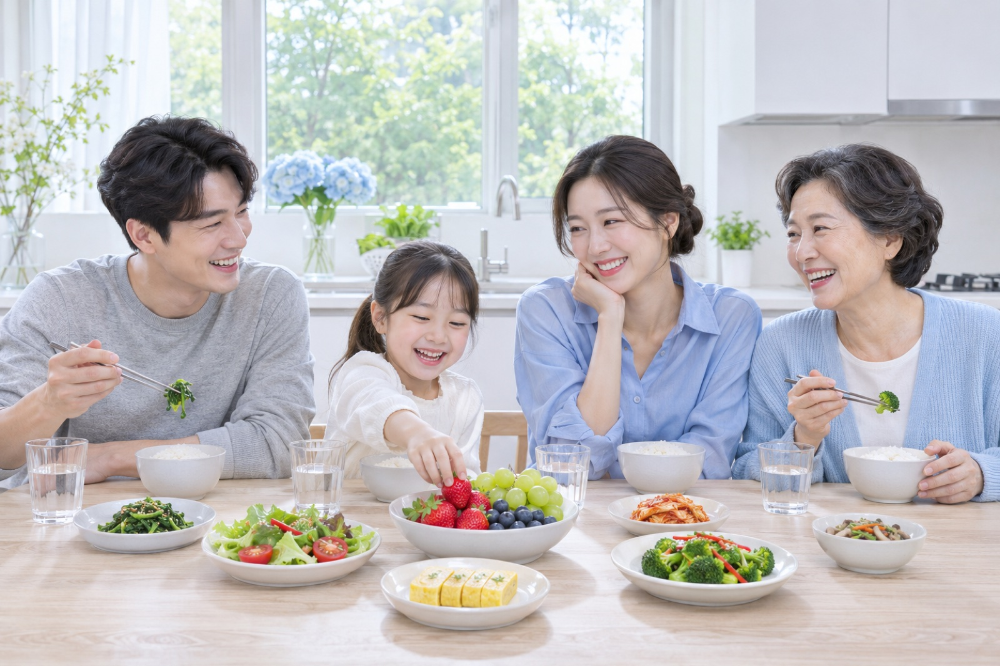

CJ바이오사이언스 · CJ R&D01
마이크로바이옴 연구 · 기술
CJ 마이크로바이옴 R&D 센터의 김치 유래 균주 연구에,
CJ바이오사이언스의 정밀 분석 기술이 더해집니다.
- 김치 유래 유산균 3,500여 개 확보
- MAC · CJRB-101 협업 연구
The K-Lifestyle Wellness Solution Provider
김치에서 찾은 3,500여 개의 유산균 연구가 아침부터 밤까지, 당신의 하루에 맞춘 웰니스 솔루션이 됩니다.
출처: 기존 CJ웰케어 홈페이지 ‘핵심 균주 자산’ · ‘연구 성과’ · ‘History’, CJ웰케어 보도자료
Why CJ Wellcare
CJ웰케어는 The K-Lifestyle Wellness Solution Provider입니다. 한국인의 식탁에 늘 있던 김치에서 유산균을 찾고, 20년 넘게 쌓은 연구 근거를 모두의 하루에 맞는 웰니스로 만듭니다.
From Science to Your Day
CJ바이오사이언스의 마이크로바이옴 기술이
CJ웰케어의 맞춤형 제품이 되고, 그 제품이 더 건강한 하루로 이어집니다.

CJ바이오사이언스 · CJ R&D01
CJ 마이크로바이옴 R&D 센터의 김치 유래 균주 연구에,
CJ바이오사이언스의 정밀 분석 기술이 더해집니다.

CJ웰케어02
검증된 균주와 기능성 소재를 장 건강, 피부, 수면 등 고민별 제품으로 설계합니다.
고객03
아침 유산균부터 나이트 루틴까지,
하루의 흐름에 맞춘 웰니스로 일상 전체를 케어합니다.
With CJ Bioscience맥플랜의 여정
CJ Original StrainCJLP133의 여정
Health
장 건강에서 이너뷰티, 멘탈 웰니스까지 건강한 일상을 설계합니다.

20여 년의 장내 마이크로바이옴 연구로 만든 유산균과, 미생물을 위한 식이섬유.
바이오코어 · 맥플랜
자세히 보기
속부터 채우는 균형 잡힌 이너뷰티 루틴.
이너비
자세히 보기편안한 밤과 또렷한 하루를 위한 나이트 · 두뇌 건강 케어.
멜라메이트 · 메모리메이트
자세히 보기
눈, 관절, 남성 건강, 성장기 아이까지. 온 가족의 기본을 채웁니다.
닥터뉴트리 · 아이시안 · 전립소 · 관절오만보 · 얌그루
자세히 보기
아홉 번 찌고 말린 흑삼,
시간과 정성으로 빚은 정통 보양.
한뿌리 · 제일건강원
자세히 보기CJ웰케어 24시간 웰니스 루틴
활력 있는 아침부터 편안한 밤까지, 당신의 일상에 필요한 웰니스를 제안합니다.

공복의 아침, 장 건강 루틴으로 하루의 컨디션을 준비합니다.


하루를 정리하는 나이트 루틴. 오늘 밤은 혼자가 아니에요.
Science
Pediatric Allergy
and Immunology
2012 · 23:667–673
A randomized trial of Lactobacillus plantarum CJLP133 for the treatment of atopic dermatitis
Han Y et al.
무작위 배정 · 이중맹검 · 위약대조로 설계한 대표 연구입니다. CJLP133은 2013년 국내 개발 유산균주 최초로 개별인정형을 획득했습니다.

2014년 미국 스탠퍼드대 의과대학 연구진이 제시한 개념을, CJ바이오사이언스의 정밀 분석 기술과 함께 일상형 제품으로 만들었습니다.
Publications
2011 – 2026
Nutrients · J Appl Microbiol · Cell Immunol · Benef Microbes · Food Control 외
국제 학술지 논문 19편
Recognition
2013
CJLP133
식품의약품안전처
2015
BYO 유산균
2015. 07 · 2015. 09
2016
한뿌리
미국 식품의약국 신규건강식품원료
2024
바이오코어
제26회 대한민국브랜드대상
안내건강기능식품은 질병의 예방 및 치료를 위한 의약품이 아닙니다. 인체적용시험 결과는 연구 대상자 기준이며 개인에 따라 차이가 있을 수 있습니다. 연구 요약은 기존 CJ웰케어 홈페이지 ‘연구 성과’ 자료를 인용했습니다.